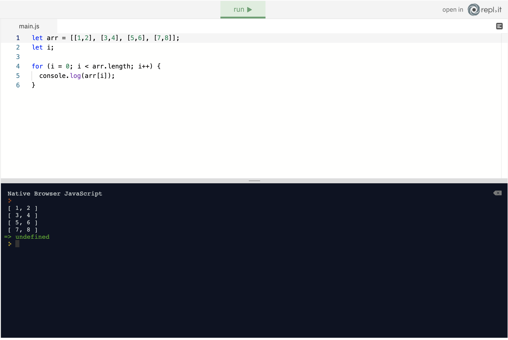
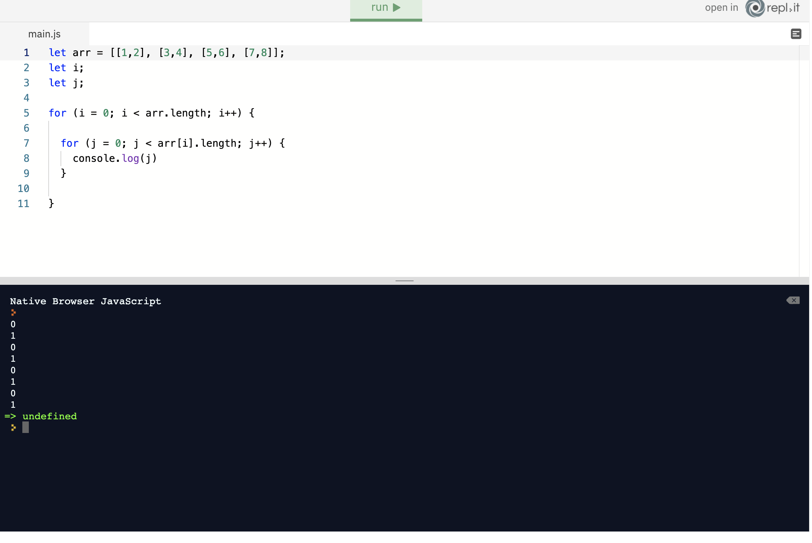

Iterations are performed in loops. We are going to explain each loop in the following lessons. You can think of iteration as doing the same step over and over again until a certain condition is met. For example, you can tell the computer to take five steps in one direction until it gets home: step.forward(5) until home; This means step.forward(5) is going to repeat over and over again until it gets home.
step.forward(5) until home;
for loops
for (statement 1; statement 2; statement 3) {
code block to be executed
}
Don’t worry. It won’t be that abstract when we look at some examples. Let’s say you are very happy today, super happy! You are learning JavaScript from the comfort of your home; things are good, right? And you want to shout ten times how happy you are. Imagine how unhappy you would be if you had to type the same thing all ten times:

That can’t be right. There must be a much easier way to write the same thing ten times. "For" loop to the rescue:


dans explaination - above statement is broken into three parts to start the loop, we need the start point, (ie 0) we need amount of the loop or the condition, ie start at 0 and if variable is less than (<) 10, next we tell the computer what to do, the third part, to incrememnt by 1 we just use var++ simple actually... start at 0, the condition and the action
0 for example
if the variable is less than more than etc
do this - var++ var-- etc
iterating throught arrays allows us to run through arrays we can use a for loop to execute a piece of code for every item in an array
The first thing we want to do is create an array that we are going to iterate through. Iteration is going to display all the items in the array:
We created an array on the first line and initialised the for loop on the third line. The critical part is in the parentheses of the for loop. After the declaring the variable i, which we assigned zero to, we check whether the var i is less than the overall size of the array sports. How can we check the size of the array? By using length property, remember? Therefore, iteration will go on until i becomes 4. When it becomes 4, iteration will stop because 4 is not less than 4. When iteration ends, the code block in the curly brackets will not be executed. In the each iteration i is incremented by one which means it is going to be 0,1,2,3. As before we can access items in an array by their index. That means that we can get the first item in our sports array like this: sports[0] Instead of 0, we have incrementer which is going to be 0,1,2,3. That means code block in the {} brackets is going to be sports[0], sports[1], sports[2] and sports[3].
let sports = ["basketball", "football", "tennis", "chess"];
for (let i = 0; i < sports.length; i++) {
console.log(sports[i]);
}
Loops and Iteration - Required - For Loops: At this point in your JavaScript journey, you've learned a multitude of somewhat disconnected ideas which have yet to be able to do much on their own. The concept of loops and iteration will bring a lot of those ideas together. Consider that you are the social media manager for a company and the company would like a website containing the usernames of all their Twitter followers. It doesn't need to be pretty, it just needs to be functional. In the code window we've created a list of 200 random usernames and stored it in a variable called usernames, for you to use as a sample. Your challenge is to: Write a for loop that iterates through the usernames and for each username, logs a valid HTML paragraph tag to the console containing the username (e.g.
username1
). Requirements: The output must match exactly and every username must be included. Note: Though this is not a requirement, don't forget you can use template literals if you want your code to be modern and elegant! If you're stuck, the Loops and Iteration lesson - specifically the For Loops and For Loops and Arrays units - will give you everything you need to succeed. Be sure to submit and compare your answer with the model solution (only available to view after you click submit).this worked using the for - in version of the loop...
an easier way to iterate through arrays
we can use a for -in loop to easily get the index integer for elements in the array
Just like in our previous lesson, we're going to create an array to iterate through. Run the code below and then keep reading below the code for an explanation of what is going on here:
We created an array on the first line and used a different kind of for loop. This is a much simpler way of iterating through an array. This is called a for-in loop because it uses the keywords for and in inside the parentheses. As before, the variable i contains the index integer of the current element in the array. That means that the code block in the {} brackets is going to be:
sports[0] in the first iteration sports[1] in the second iteration sports[2] in the third iteration sports[3] in the fourth iteration
This time, though, we don't need to worry about supplying the condition (which, last time was: i < sports.length) or the incrementer (which was: i++ in the previous lesson). for (let i in sports) is easier to remember, and is good if we want to be able to retrieve and work with the index number of each element in an array. As we've seen, we can get the value of each individual element in the sports array using the code sports[i]. But there is an even easier way, which we'll look at in our next lesson.
is a type of loop which runs the same code until a condition is met
we use the keyword while and set teh condition in the (). add code to be executed in the curly brackets {}
see above for example. for loop is for as long as a condition is met. the while encorporates both, while the condition is true run this code, when its false run this code.
A while loop allows us to run code while the condition in the parentheses is true. If it is not true, stop the iteration. Let’s show our happiness again, but this time with the while loop:
working example
is a type of loop which runs the same code until a condition is met it has two keywords - do and while
This loop has two keywords: do and while. do { block code } while (condition);
The do while loop will run the block of code at least once even though the condition is false. It means that the block of code runs before the condition is checked. The condition comes after the block of code. This loop is used if you want to run the block of code at least once no matter what. The do while loop will stop iteration when the condition is false. I am sure you want to tell everyone again how happy you are. Ten times! So let's do that again, but with a do while loop:

We set the variable i to 0 first; then the code block runs “I am happy”. Then in the same code block, i was incremented by 1. Only after that, the condition will be checked (i < 10). So it doesn’t check if 0 is less than 10. Variable i was incremented by one before the condition. The first time iteration came to the condition; i was already 1. When i became 9, code block was executed (“I am happy”), i was incremented by 1, it became 10, ten is not less than 10, the condition was false, and the loop stopped. But notice that if we set the variable i at the beginning of the iteration to any number higher than 10,
in this example the code will run once, it runs fitst then checks the condition, if we set it to while i =4 or 5 or 6 it will still run once!
to print out or console log the last username we use the usernames.length property we also add -1 to give us the ability to run the loop
solution

Sure. So, if you have an array:
let arr = ['a', 'b', 'c'];
You can access the elements by saying:
console.log(arr[0]); // logs 'a'
console.log(arr[1]); // logs 'b'
console.log(arr[2]); // logs 'c'
We could use this approach to log out every variable in an array, but if our array has 1000 elements in it, then we can't really be writing 1000 console.log statements, one for each element!
So, what we can do is pass a variable as the index. For example:
let i = 2;
console.log(arr[i]); // as i is 2, this statement
// evaluates to console.log(arr[2]),
// so it will log 'c'
With that in mind, we can use a for loop which will create a variable called i, and increase it by one each time the loop executes.
for (let i = 0; i < 1000; i++) {
console.log(arr[i]);
}
On the first iteration of the loop, the log statement will evaluate to:
console.log(arr[0]);
then:
console.log(arr[1]);
then:
console.log(arr[2]);
All the way up to:
console.log(arr[999]);
So the for loop and the variable i are used to iterate through each element of the array, and access the value stored within.
stops the iteration using the
breakkeyword
The break keyword stops the iteration no matter what. No matter at which step the iteration is, break keyword will stop the iteration and exit the loop:
note operators reference:

Although the iteration should have gone all the way up to 4, it ended when i was set to 3 because of the break statement.
Although the iteration should have gone all the way up to 4, it ended when i was set to 3 because of the break statement.
// Write your loop here. Break it after printing 50 to the console:
let i;
for (i=0; i < 60; i++) {
if (i===51) {
break;
}
console.log(i)
}
a javascript keyword which skips one iteration and moves to the next by using the continue keyword
the continue keyworkd isnt going to stop the whole iteration and exit the loop iut will just skip one iteration and move to the next one
Notice that there is no number 3 in the output. When variable i became 3, the iteration was skipped because of the continue keyword in the if statement and the code block did not run.
what we take from this lesson is that we are only logging odd numbers so we need a way to iterate through the loop, we can check for an odd number by using the % symbol, modulus if i%2 (remainder) ==== is equal too 0 we know its an even number so we then continue with the iteration, this will then check the next number, if we get any other number other than 0 we know its an odd, thich then activates the console.log(i)
a nested loop is a loop within a loop- it runs an iteration within another iteration.
We learned how to iterate through an array. We just need to create a loop with a code we want to execute. This time, we are going to use a for loop. So let’s create it and iterate over the first dimension of our array:
So, how does this work? After the array, we initialised variable i. Then we used the for keyword to create a for loop. In the parenthesis, we set the i variable to 0. Therefore counting will start at zero. The next statement is conditional: i < arr.length; This means iterate as long as a variable i is less than the length of an arr, in our case the length of the arr is 4. Therefore the loop will run until the variable i is no longer less than 4. In the next statement comes incrementor: i++; This looks familiar! Incrementor simply increments the value of the variable i by 1. On the fifth line in our example, we access items in arr by their index. The result of the arr[0] is going to be the first nested array: [1,2]. The next one is arr[1], and the result is going to be [3,4] and so on. arr[i] is how we access items in arr. This i in arr[i] is incremented by 1 in each iteration: arr[0], arr[1], arr[2], arr[3].
We need another loop to access items in the subarray, a loop that will iterate through arrays that are nested in the first array: array[index][index]; For that, we need another incrementor and another loop; the nested loop. We called it j and set it to zero. We need to make sure that this nested loop stops when there are no other items in the subarray, meaning when the incrementor, this time called j, is less than the length of each subarray. All of our subarrays have only two items which mean that j will need to be less than 2. When it goes to 2, the nested loop will stop. The incrementor, j variable, in this case, will be either 0 or 1.
explanation: we set variable i to access the outer array and j to access arrays inside of the i var loop
in the example we can see this at work. i lessthan array lengh add one, then check the array for j loop (second condition as you may have noticed we havent console.log()step one, as first condition is met it moves to the nested loop portion, this is not saying when j> arr lengh [i increment by one] and log it!
In this instance, we are going to get each item in the subarray that is positioned at index 0 and 1. If you remember, we can access items in the subarray as follows:
arr[0][0] is going to be 1 arr[0][1] is going to be 2 arr[1][0] is going to be 3 arr[1][1] is going to be 4 arr[2][0] is going to be 5 arr[2][1] is going to be 6 arr[3][0] is going to be 7 arr[3][1] is going to be 8
a loop that never ends becasue a condition is never met
nfinite loops usually happen by mistake due to some bug in your code. It will run the block code an infinite number of times and probably crash your browser or app. Let’s have a look at
let i = 0;
for (i; i < 1; i--) {
console.log(i);
}
in this we state that i is equal to 0, but our second condition is let code run if